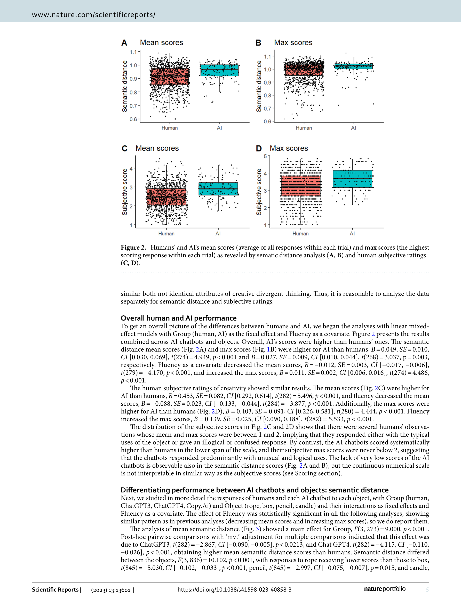
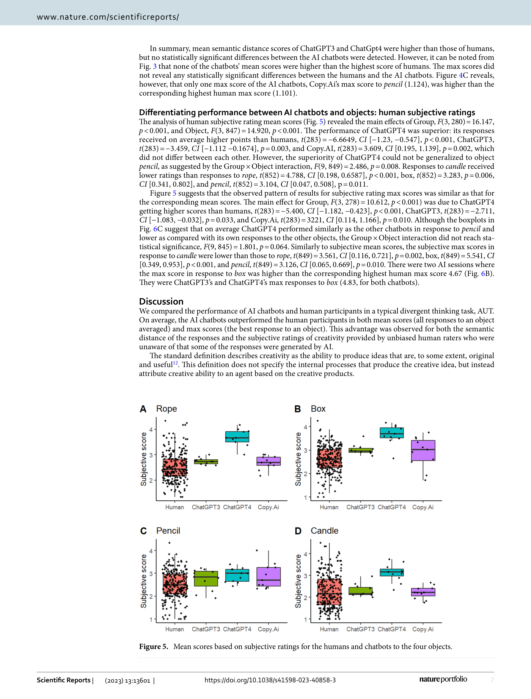
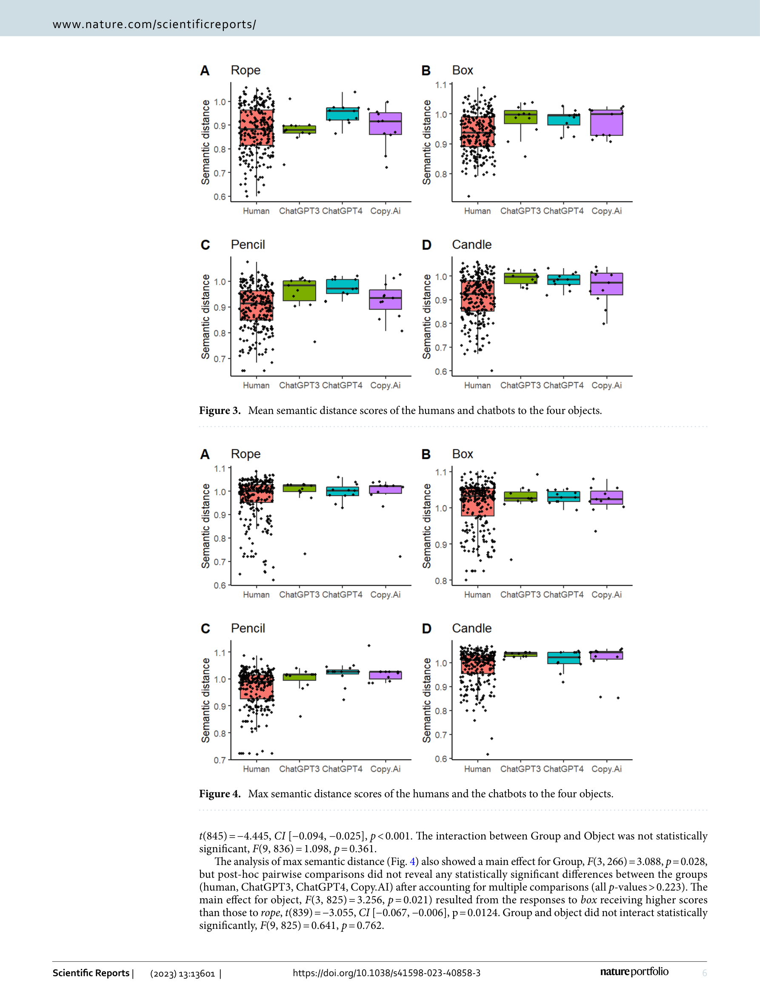

메타 정보
- 저자: Mika Koivisto, Simone Grassini
- 학술지: Scientific Reports, 13, 13601 (2023)
- DOI: 10.1038/s41598-023-40858-3
- 키워드: 창의성, 발산적 사고, AI 챗봇, Alternate Uses Task, 인간-AI 비교

Figure 1

Figure 2
Figure 1

Figure 2
인간(n=256)과 AI 챗봇(ChatGPT3.5, ChatGPT4, Copy.Ai) 3종의 창의적 발산적 사고(divergent thinking) 능력을 대안적 용도 과제(Alternate Uses Task, AUT)로 비교한 연구이다. 일상 사물(밧줄, 상자, 연필, 양초)에 대해 독창적이고 창의적인 용도를 생성하도록 요청한 뒤, 의미적 거리(semantic distance)와 인간 평가자의 주관적 창의성 평점 두 가지 척도로 평가하였다. 핵심 발견은 AI 챗봇이 평균적으로 인간을 능가하지만, 최상위 인간의 아이디어는 여전히 AI와 대등하거나 이를 초과한다는 것이다.

Figure 3
생성형 AI의 급속한 발전으로 AI가 예술, 시, 체스 등 전통적으로 인간 고유 영역으로 간주되던 창의적 활동에서 인상적인 성과를 보이고 있다. 그러나 발산적 사고 -- 창의성 연구에서 가장 널리 사용되는 측정 패러다임 -- 에서 AI와 인간의 체계적 비교는 부족했다. 이 연구는 AI 시대에 인간 창의성의 본질과 미래에 대한 근본적 질문에 답하고자 한다.

Figure 4
잘 설계된 실험 연구로, AI와 인간의 창의성 비교에서 "평균 대 최고"라는 중요한 구분을 제시한다. 의미적 거리와 주관적 평가의 이중 측정은 방법론적 강점이다. 그러나 AUT라는 단일 과제에 의존하며, AI 샘플이 상대적으로 작고, 2023년 초반 모델 기준이라는 시의성 한계가 있다. AI가 일관되게 "나쁘지 않은" 응답을 생성하는 반면, 인간은 극단적 변동성(매우 저품질부터 최고 수준까지)을 보인다는 발견은 인간-AI 협업 창의성 연구의 중요한 출발점을 제공한다.